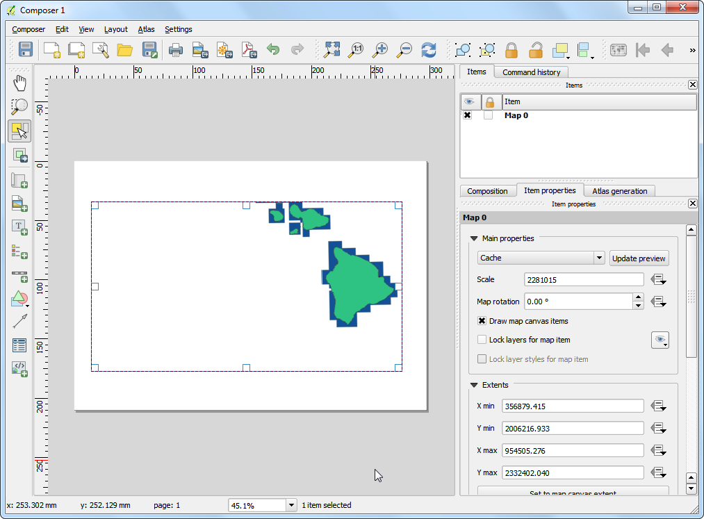
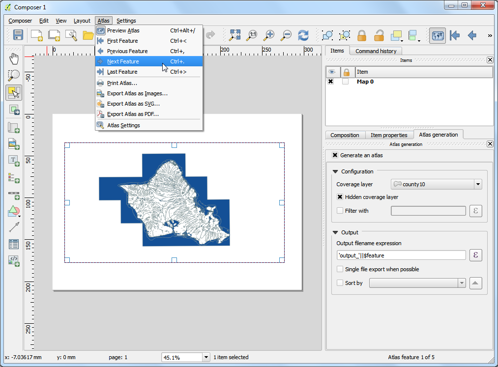
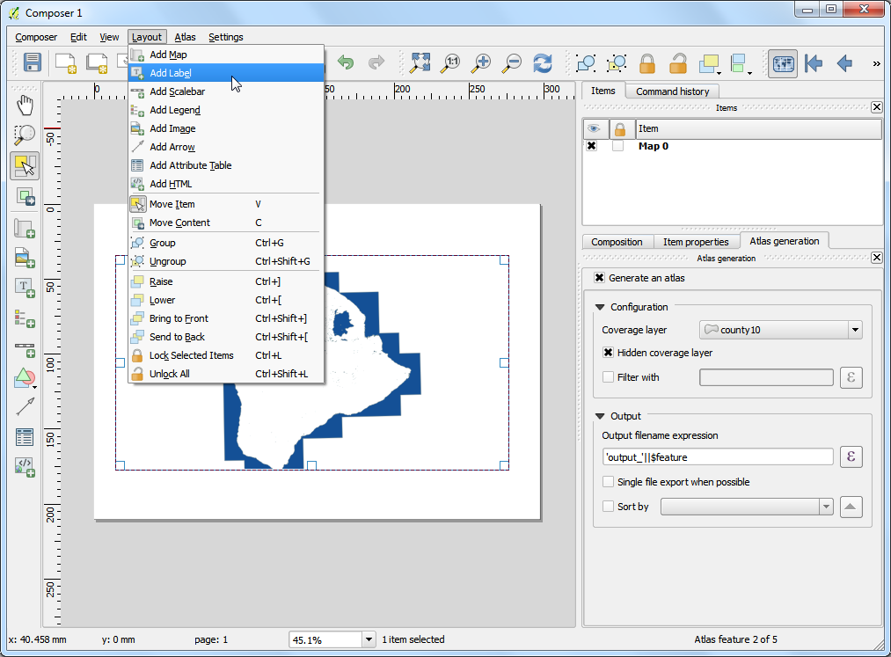
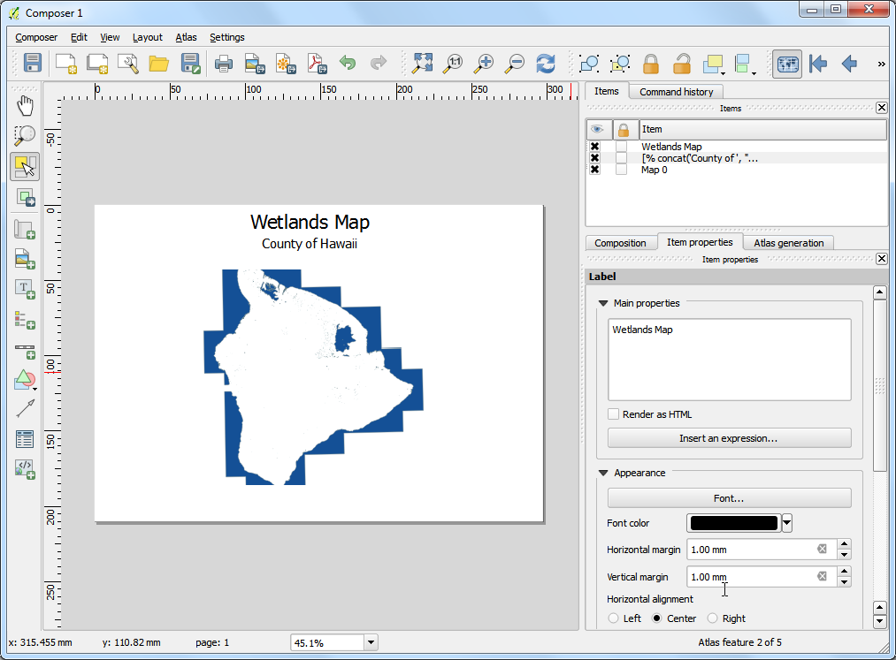
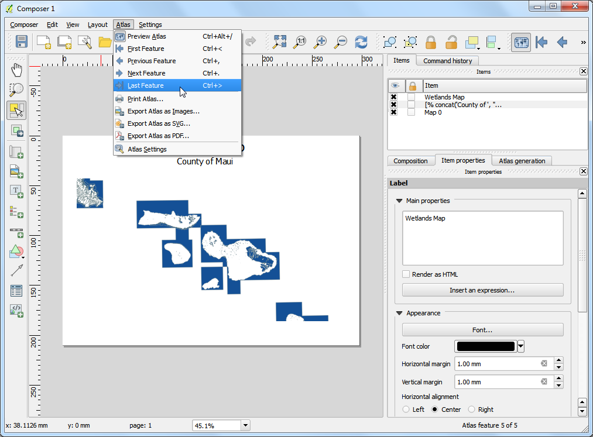
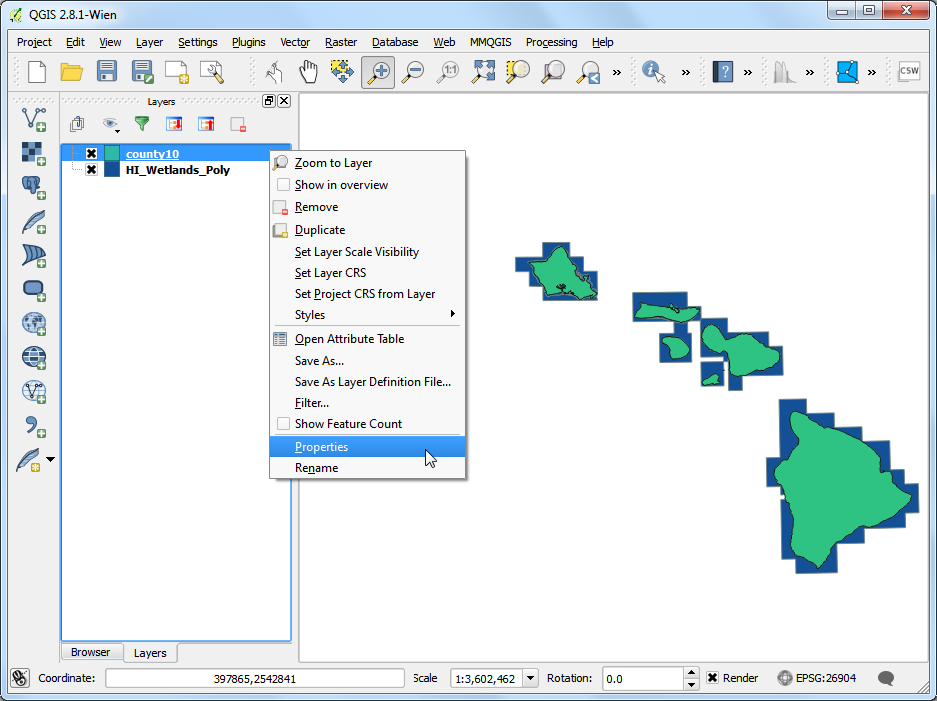
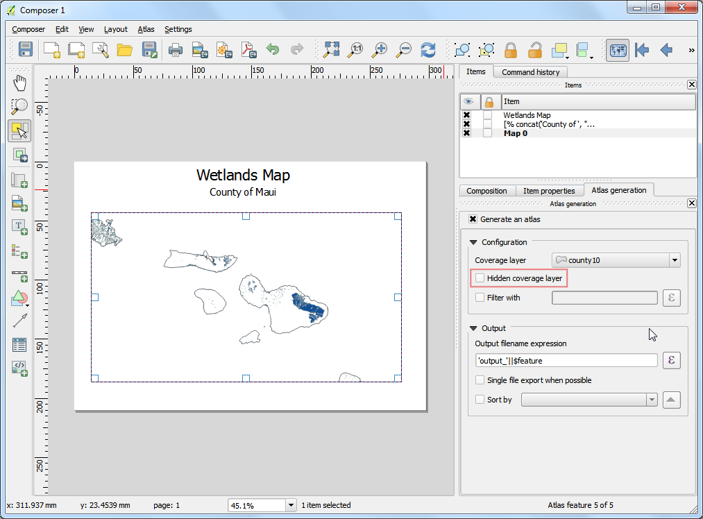
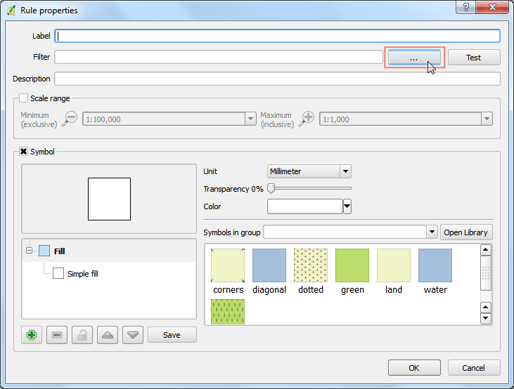
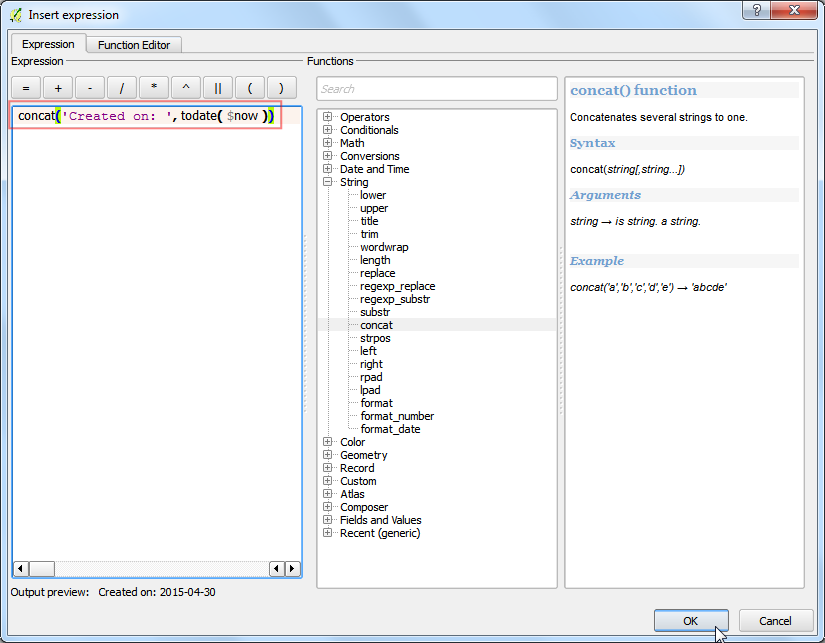
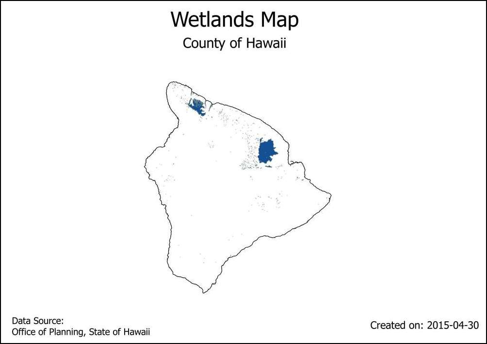

利用地圖出版設計的圖輯工具自動創造地圖
如果你的所屬單位有出版紙本或線上地圖的話，你或許會常常需要使用同一個範本製作許多地圖，這些地圖通常個別代表不同的行政區或是不同的特定區域。如果你需要時常更新這些地圖的話，手動弄起來會花費許多時間，甚至可能會成為超級麻煩事。不過，QGIS 有個稱為 輿圖 的工具，可以讓你設計地圖範本並且使用它來製作出版許多不同地區的地圖。如果你對「地圖出版設計（Print Composer）」不熟悉，請先閱讀 製作地圖 中的教學。
內容說明
本教學將示範如何為夏威夷州的每個縣製作濕地地圖。
操作流程
打開 QGIS，選擇 。

選擇 HI_Wetlands.shp.zip 並按下 確定。

選擇 HI_Wetlands_Poly 圖層並點選 確定。

你會看到很多多邊形出現，代表夏威夷州全部的溼地範圍。由於我們要分別製作夏威夷每個縣的溼地地圖，因此還需要一個郡縣邊界的圖層才行。選擇 ，然後點選 county10.shp.zip，按下 開啟。

選擇 。

設計標題保持空白，按下 確定。

選擇 。

在地圖版面上拖曳一塊你想插入地圖的區域。

切換到 項目屬性 分頁然後向下捲動，勾選 由輿圖控制 的方框，此選項用來告訴電腦本地圖的範圍是由輿圖工具所控制。（譯按：如果這時方框是無法選取的狀態，請先完成後續幾個步驟，再回來勾選。）

切換到 輿圖設計 分頁，勾選 產生輿圖 方框，覆蓋圖層 選擇 county10，如此一來電腦就會為每個在 county10 內的多邊形圖徵創造各自的地圖。你也可以勾選 隱藏覆蓋範圍圖層，這樣一來「覆蓋圖層」內的圖徵就不會顯示在地圖上。

雖然已經完成了輿圖設定，但這時地圖影像還不會有任何改變。選擇 。

按下去之後地圖會刷新成為其中一張地圖看起來的樣子，注意在右側最底部有個訊息，告訴你現在所使用的多邊形圖徵編號。

你也可以預覽由其他多邊形建立的地圖，請選擇 輿圖 –> 下一個圖徵，

如此一來地圖就會刷新為下一個圖徵覆蓋的範圍。

來加點標記吧！選擇 ，

在標記的 項目屬性 分頁中，選擇 插入表示式...。

在此功能中，標記文字可以使用覆蓋圖層的屬性。我們要使用 concat 函數來把兩段字串合併，而要合併的字串分別為 County of 和 county10 圖層中的 NAME10 屬性值。加入以下的表達式後，按下 確定。
concat('County of ', "NAME10")
調整成你喜歡的字體大小。

加入另一個標記，然後在 主要屬性 下輸入 Wetlands Map。由於沒有使用表達式，此文字在所有的地圖中都會相同。

選擇 ，然後確認地圖標記有照我們所想的運作。目前濕地地圖上的多邊形也延伸到了海中，看起來不怎麼美觀，所以接著我們就要來改變樣式，隱藏郡縣邊界外側的多邊形圖徵。

切換到 QGIS 主視窗，在 county10 圖層上按右鍵選擇 屬性。

在 樣式 分頁中，選擇 反轉多邊形 的呈現方法，這個特殊的樣式設定的是多邊形的「外部」區域。選擇白色做為填充色彩，然後按下 確定。

回到地圖設計的視窗，如果我們要讓反轉多邊形的設定出現的話，就得先取消勾選在 輿圖設計 分頁下的 隱藏覆蓋範圍圖層 才行。套用新樣式後的地圖由於多邊形外圍區域已經隱藏起來，看起來乾淨許多。

不過目前還有一個問題，你可以看到在位在覆蓋圖層內部，但是屬於其他圖徵的區域仍然可以看見，這是因為輿圖工具並不會自動把其他圖徵也隱藏起來。此設計在某些狀況下很有用，但卻不是我們想要的、每個地圖只呈現單一個多邊形圖徵內的資訊。為了修正此問題，我們要回到 QGIS 主視窗，然後在 county10 圖層上按右鍵，選擇 屬性。

在 樣式 分頁中，有個 子繪圖 下拉選單，選擇 規則 的呈現方法。在下方 規則 的欄位上點兩下。

點選 過濾條件 右側的 ... 鈕。

在 表達式字串建構器 中，展開 Atlas 的群組（譯按：或是 Variables 的群組），然後找到 $atlasfeatureid 或 atlas_featureid，此函數會傳回目前輿圖工具選擇的圖徵。我們要做的是建立一個表達式，讓它只選擇輿圖工具選擇的圖徵，因此請輸入以下表達式：

回到地圖設計的視窗，在地圖項目的 項目屬性 分頁中點選 :guilabel:` 更新預覽` 後，就可以看到改變，現在每張地圖都只會顯示位於本郡縣邊界內的資料了。

我們再來加入另一個新的標記，用來標示現在的日期。選擇 然後選擇地圖上的任一區域，完成後按下 插入表示式 鈕。

展開 日期與時間 的群組，找到 now 這個函數，它用來表示現在的系統時間。另外我們要使用 todate()``這個函數，用來把 ``now 的函數值轉換成日期字串。請輸入以下表示式：
concat('Created on: ', todate($now))

再加入另外一個標記，引用資料來源。你也可以順道加入其他的地圖元素，例如指北針等等，請參考 製作地圖 一章的說明。

當你完成地圖版面後，選擇 。

選擇電腦中的某資料夾，然後按下 選擇 鈕。

輿圖工具會自動地使用我們剛剛建立的範本，為覆蓋圖層中的每個圖徵創造各自的地圖。處理完成後，在資料夾中就能找到這些地圖。

這裡放上完成版地圖以供參考。

